מתכננים היום את החינוך של מחר
היחידה לתכנון ואסטרטגיה מובילה את החשיבה המחוזית ומעצבת את עתיד החינוך במחוז צפון.
היחידה פועלת בשלושה תחומי ליבה משלימים:
גיבוש והובלת האסטרטגיה המחוזית בהתאם למדיניות משרד החינוך, ליווי יחידות המשרד, וזיהוי מגמות ואתגרים עתידיים.
בחינת אפקטיביות של תוכניות מחוזיות, הסדרת תהליכים, הובלת מבדקים וסקרים, ומעקב אחר יישום החלטות, רגולציה ובקרה.
הטמעת מדיניות בתכניות עבודה, תכנון Benchmark ו-Best Practice ניהולי, ניהול לוחות אירועים מחוזיים והובלת יעדים מחוזיים בתחומי חשיבת עתיד, יזמות, חדשנות, איכות ומצוינות ארגונית.
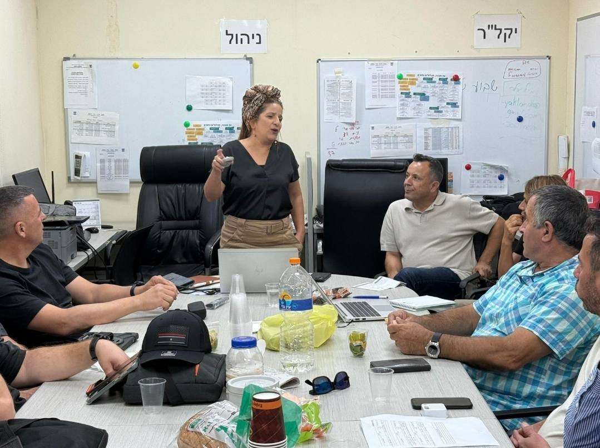
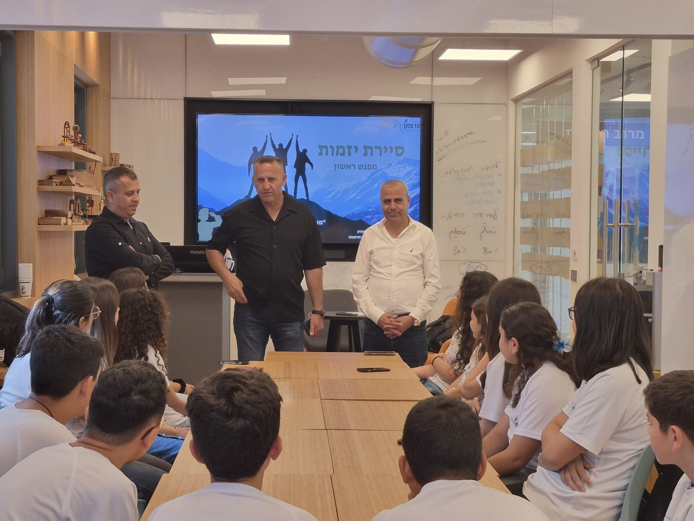
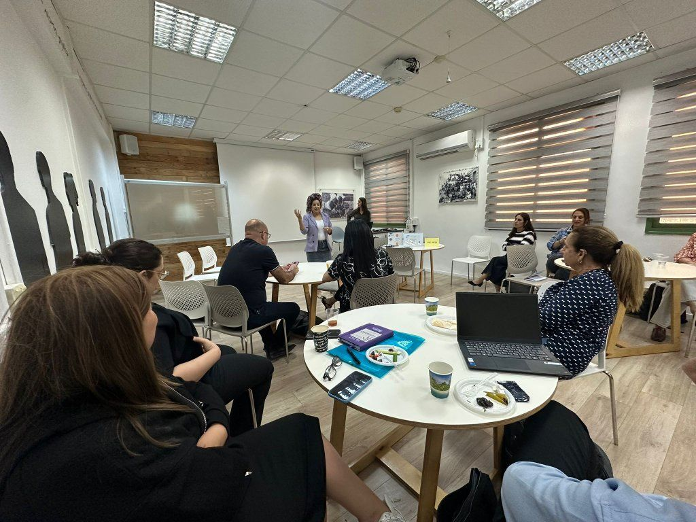
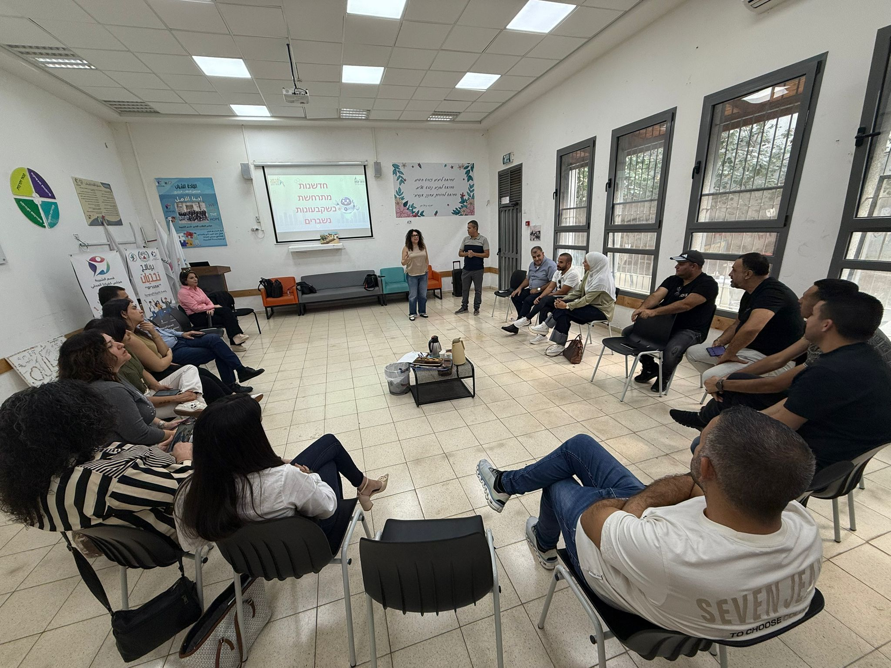
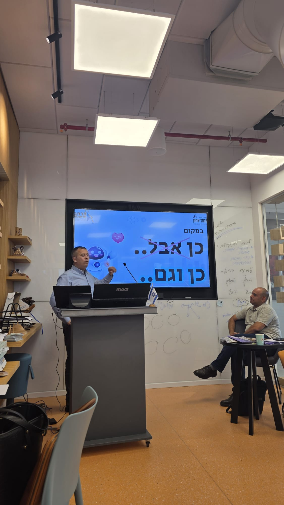
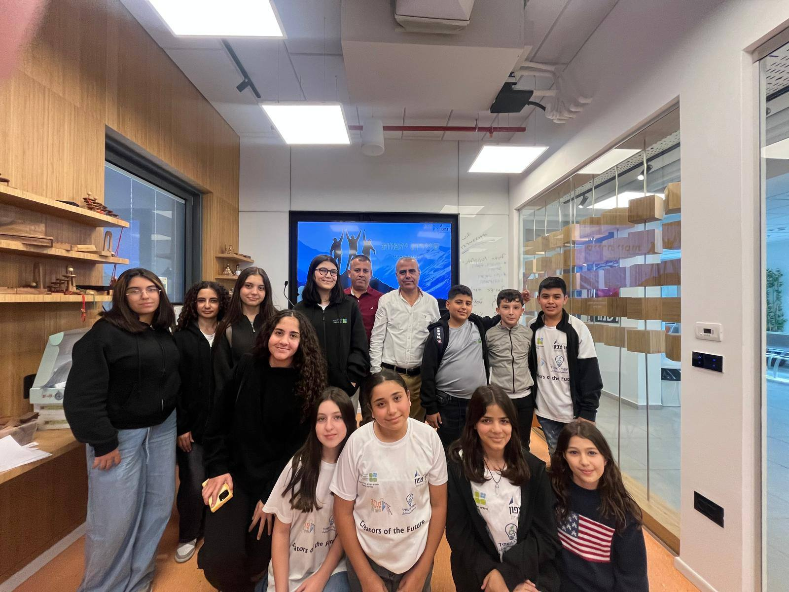
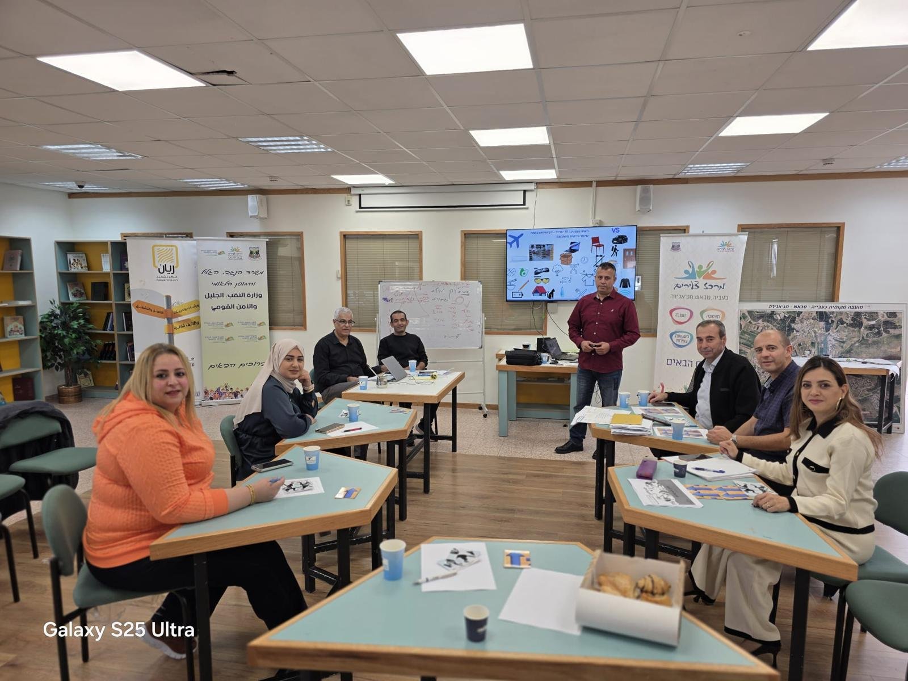
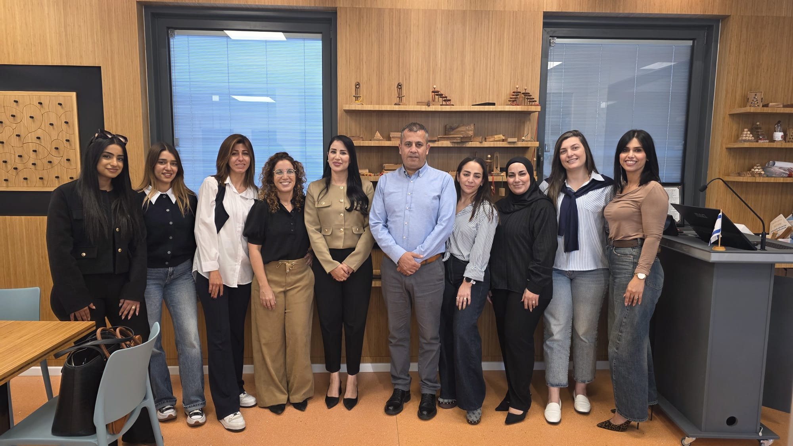
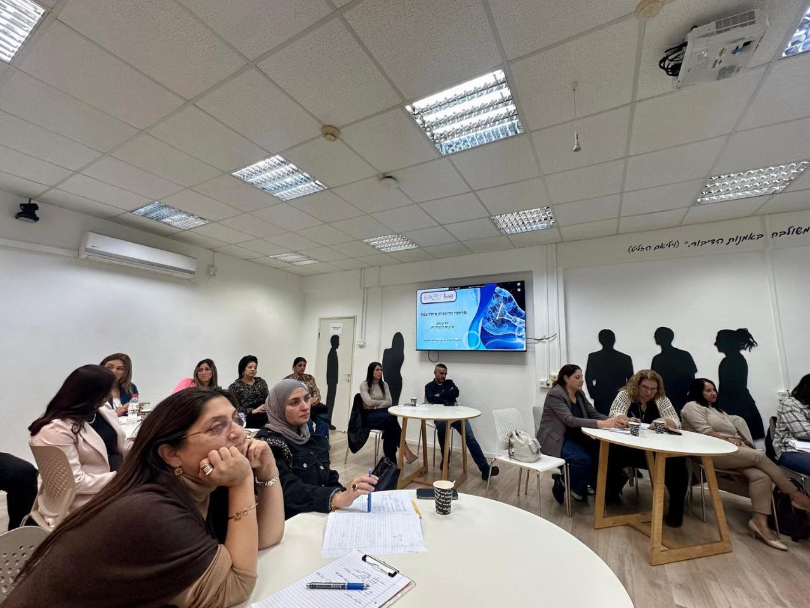
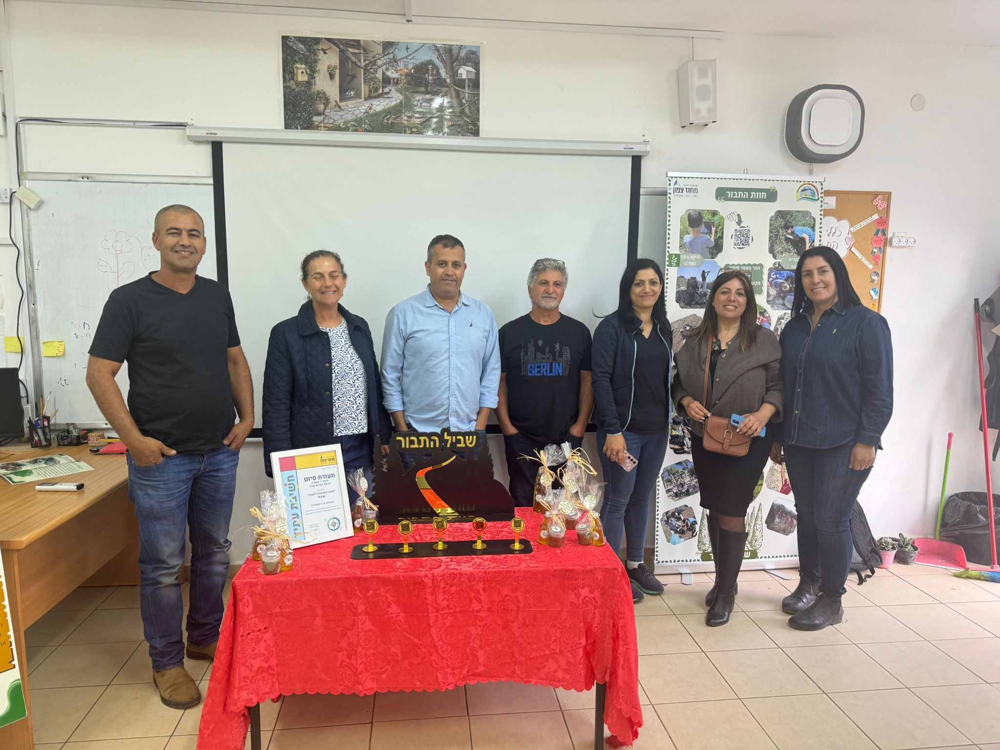
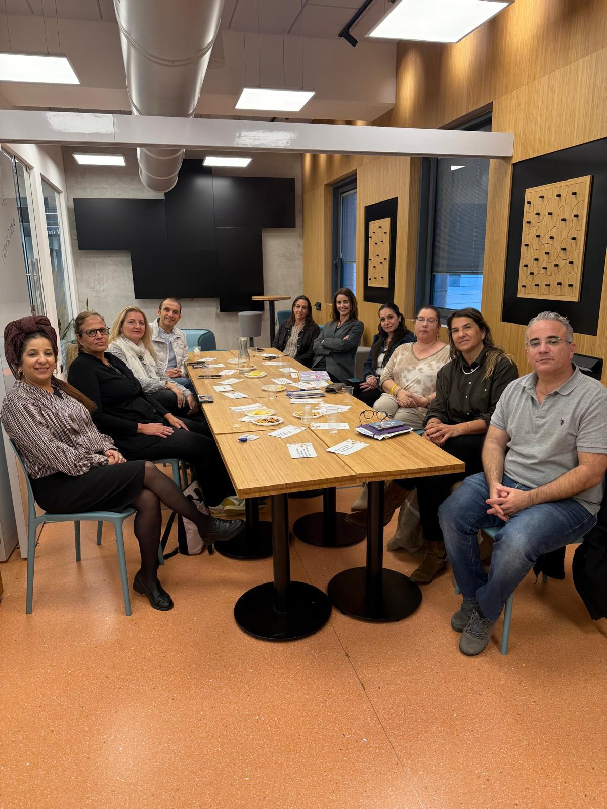
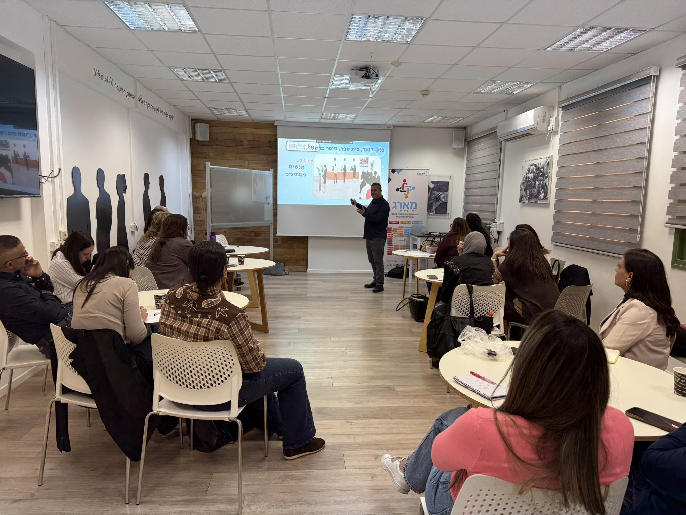
נשמח לשמוע מכם